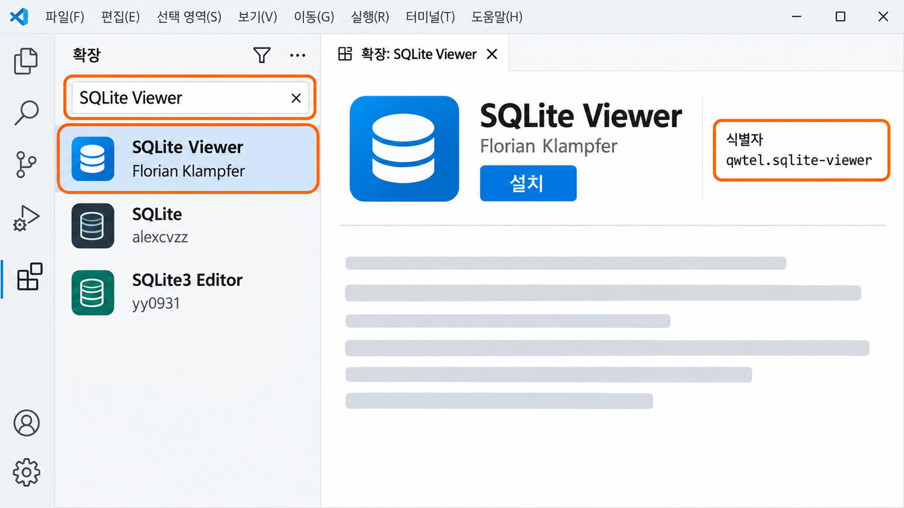
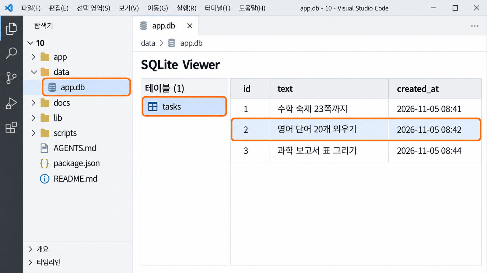

API와 요청·응답,
그리고 저장API、请求·响应
与保存
보내는 것 · 돌아오는 것 · 남는 것을 직접 보고 약속으로 적습니다.按下按钮后，画面背后发生了什么？记录又留在哪里？
亲眼看发出去的、送回来的、留下来的，再把它写成约定。
버튼을 누르면 화면 너머에서 무슨 일이 일어날까按下按钮后，画面背后发生了什么
9-2에서 세운 개발 계획의 대표 흐름에는 「버튼을 누른다 → 결과를 확인한다」 같은 단계가 있습니다. 그런데 버튼과 결과 사이에는 눈에 보이지 않는 한 걸음이 더 있습니다. 화면이 서비스에 종이 한 장을 건네고, 서비스가 처리한 뒤 답이 적힌 종이를 돌려주는 일입니다. 오늘은 그 종이 두 장과, 답을 준 뒤에도 남아 있어야 할 기록을 봅니다.9-2 制订的开发计划里，代表流程中有“按下按钮 → 确认结果”这样的步骤。但在按钮和结果之间，还有一步是看不见的：画面递给服务一张纸，服务处理后递回一张写着答复的纸。今天就来看这两张纸，以及答复之后还应该留下来的记录。

사용자의 행동은 어떤 요청이 되고, 서비스는 어떤 응답을 돌려주며,
다시 열었을 때 무엇이 남아 있어야 할까?用户的动作会变成什么样的请求，服务送回什么样的响应，
重新打开时又该留下什么？
13회까지 쓸 10 폴더를 받고 설치부터 시작한다拿到用到第 13 次课的 10 文件夹，先开始安装 실습实践
오늘부터 13회까지는 선생님이 준비한 표준 프로젝트 하나에서 내 서비스를 만듭니다. 이 프로젝트를 쓰려면 먼저 필요한 부품을 인터넷에서 받아 와야 하는데, 몇 분이 걸립니다. 그래서 설명을 듣기 전에 설치부터 걸어 두고, 받는 동안 오늘 내용을 읽습니다.从今天到第 13 次课，都在老师准备的一个标准项目里做自己的服务。要用这个项目，先得从网上下载需要的部件，要花几分钟。所以先把安装跑起来，下载的同时读今天的内容。
10 폴더가 나옵니다. JDH_VibeCoding_자기이름 안에 넣습니다. 13회까지 이 폴더 하나를 씁니다.解压后会出现 10 文件夹。把它放进 JDH_VibeCoding_자기이름。到第 13 次课都只用这一个文件夹。- 압축을 풀어 나온
10폴더를JDH_VibeCoding_자기이름안에 넣는다.把解压出来的10文件夹放进JDH_VibeCoding_자기이름。 - VS Code에서 파일 → 폴더 열기로
10폴더 자체를 연다.在 VS Code 里用 파일 → 폴더 열기（文件 → 打开文件夹）打开10文件夹本身。 - 터미널 → 새 터미널을 열고 줄 끝이
…\10>인지 본다.打开 터미널 → 새 터미널（终端 → 新建终端），看行末是不是…\10>。 npm install을 입력하고Enter를 누른다. 끝날 때까지 터미널을 닫지 않는다.输入npm install，按Enter。结束前不要关闭终端。
13회까지 쓸 10 폴더를 받고 설치부터 시작한다拿到用到第 13 次课的 10 文件夹，先开始安装 (이어서)（续）
설치가 도는 동안 9회까지의 자료를 10 폴더의 docs로 복사합니다. 10회부터 AI는 코드를 고치기 전에 docs의 문서를 먼저 읽고, 내 계획과 맞게 고칩니다. 파일 탐색기에서 06 폴더를 열어 아래 두 파일과 mockup 폴더를 고르고 복사합니다.安装进行的同时，把到第 9 次课为止的资料复制到 10 文件夹的 docs 里。从第 10 次课起，AI 在改代码之前会先读 docs 里的文档，再按我的计划去改。在文件资源管理器里打开 06 文件夹，选中下面两个文件和 mockup 文件夹复制。
| 06 폴더에서 복사从 06 文件夹复制 | 10 폴더의 붙여 넣을 곳粘贴到 10 文件夹的哪里 |
|---|---|
PRD.mdPRD.md | 10\docs10\docs |
09_development_plan.md09_development_plan.md | 10\docs10\docs |
mockup 폴더 통째로整个 mockup 文件夹 | 10\docs10\docs |
00_course_rules.md는 수업에서 만들 수 있는 것과 어려운 것을 정한 수업 조건이고, 10_api_promise.md는 오늘 쓰는 API 약속표, 12_test_record.md는 12회에 쓰는 테스트 기록입니다. 그래서 06에서는 두 파일과 mockup만 가져옵니다. 복사가 끝나면 docs에 파일 다섯 개와 mockup 폴더가 있어야 합니다.00_course_rules.md 是规定课上能做什么、什么难做的课堂条件，10_api_promise.md 是今天要写的 API 约定表，12_test_record.md 是第 12 次课写的测试记录。所以从 06 只拿两个文件和 mockup。复制完后，docs 里应该有五个文件和 mockup 文件夹。
터미널에 다시 …\10>가 나오고 탐색기에 node_modules 폴더가 생깁니다. 이 폴더는 열어 보지 않아도 되고, 제출할 때도 넣지 않습니다.终端里会再次出现 …\10>，资源管理器里会多出 node_modules 文件夹。这个文件夹不用打开，提交时也不放进去。
API는 서비스 안의 약속된 창구다API 是服务里约定好的窗口 핵심核心
그림의 창구에서 종이는 아무 데로나 넣지 않습니다. 정해진 틈으로, 정해진 양식을 넣어야 답이 나옵니다. 서비스에서도 화면이 기능에게 일을 부탁할 때 이렇게 미리 정한 창구로 부탁합니다. 이 창구를 API라고 부릅니다.图里的窗口，纸不能随便往哪儿塞。要从规定的缝里、按规定的格式递进去，才会有答复。服务里也一样：画面请功能办事时，要通过这样事先定好的窗口来请求。这个窗口就叫 API。
- 현상现象
- 버튼을 누르면 잠깐 「보내는 중」이 보였다가 결과가 나타납니다. 그 사이에 화면은 서비스에 무언가를 보내고 답을 기다렸습니다.按下按钮后，会短暂显示“正在发送”，然后结果才出现。在这之间，画面向服务发出了什么，并在等答复。
- 쉬운 설명通俗说法
- 화면과 기능이 서로 부탁하고 답하는 약속된 창구입니다.画面和功能互相请求、答复的约定好的窗口。
- 정확한 정의准确定义
- 한 프로그램이 다른 프로그램에게 일을 요청할 때 쓰는 주소 · 방법 · 주고받는 데이터의 약속.一个程序请另一个程序办事时使用的地址 · 方法 · 收发数据的约定。
- 경계边界
- API가 꼭 다른 회사의 서비스를 뜻하지는 않습니다. 오늘 보는 API는 내 프로젝트 안에 있는 창구입니다.API 不一定指别家公司的服务。今天看的 API 是自己项目里面的窗口。
- 문장 속 사용句中用法
- “추가 버튼을 누르면 화면이
/api/tasksAPI에 할 일을 보낸다.”“按下添加按钮，画面就把待办发给/api/tasks这个 API。”
요청에는 어디로 · 어떻게 · 무엇을이 담긴다请求里装着 往哪里 · 怎么做 · 送什么 핵심核心
창구에 종이를 넣을 때 정해야 하는 것은 세 가지입니다. 어느 창구로 갈지, 무엇을 해 달라고 할지, 함께 무엇을 건넬지입니다. 오늘 받은 10 프로젝트에는 이 세 가지가 이미 정해진 예시 「할 일 정리」가 들어 있습니다. 표의 오른쪽 칸은 할 일을 추가할 때의 요청입니다.往窗口递纸时要定三件事：去哪个窗口、请它做什么、一起递过去什么。今天拿到的 10 项目里，已经有一个把这三件事定好的示例“할 일 정리”（待办整理）。表格右栏是添加待办时的请求。
| 요청에 담기는 것请求里装的 | 뜻意思 | 예시 프로젝트에서는在示例项目里 |
|---|---|---|
| 어디로往哪里 | 요청 주소请求地址 | /api/tasks/api/tasks |
| 어떻게怎么做 | 방법 — 보여 달라(GET)인지 처리해 달라(POST)인지方法 — 是“给我看”（GET）还是“帮我处理”（POST） | POSTPOST |
| 무엇을送什么 | 함께 보내는 데이터一起发送的数据 | 입력한 할 일 text输入的待办 text |
주소와 방법은 10-2에서 AI가 제안하면 내가 읽고 확인합니다. 오늘 내가 먼저 정할 것은 무엇을 보내고 무엇을 돌려받아야 하는지입니다.地址和方法到 10-2 由 AI 提出、由我读过确认。今天我先要定的是发送什么、该收回什么。
계획의 대표 흐름을 요청과 응답으로 다시 읽는다用请求与响应重读计划里的代表流程
9-2에서 정한 대표 흐름은 여전히 기준입니다. 다만 오늘은 「행동」과 「서비스의 반응」 사이에 숨어 있던 두 걸음을 꺼내 봅니다. 화면이 요청을 보내는 걸음과, API가 처리해 응답을 돌려주는 걸음입니다.9-2 定下的代表流程依然是标准。只是今天要把藏在“动作”和“服务的回应”之间的两步拿出来看：画面发出请求的一步，和 API 处理后送回响应的一步。
- 사용자가 할 일을 쓰고 추가를 누른다. — 대표 흐름의 행동用户写下待办，按添加。— 代表流程里的动作
- 화면이 API에 요청을 보낸다. 「
/api/tasks로, 처리해 줘, 할 일 = 과학 보고서」画面向 API 发出请求。“发到/api/tasks，请处理，待办 = 科学报告” - API가 빈칸인지 확인하고, 할 일을 SQLite 파일에 저장한다.API 检查是不是空的，再把待办存进 SQLite 文件。
- API가 응답을 돌려준다. 「성공, 추가했습니다」API 送回响应。“成功，已添加”
- 화면이 목록을 다시 불러와 새 할 일을 보여 준다. — 대표 흐름의 서비스의 반응画面重新读取列表，显示新的待办。— 代表流程里服务的回应
내 09_development_plan.md의 2항 대표 흐름에서 버튼을 누르는 단계를 찾아보세요. 그 단계가 오늘 요청과 응답으로 펼칠 자리이고, 3항 「기억할 기록과 표」가 저장할 것입니다.在自己的 09_development_plan.md 第 2 项代表流程里，找出按按钮的那一步。那一步就是今天要展开成请求与响应的地方，第 3 项“기억할 기록과 표”（要记住的记录与表）就是要保存的东西。
보여 달라는 GET, 처리해 달라는 POST“给我看”的 GET，“帮我处理”的 POST 핵심核心
요청의 방법은 여러 가지지만 이 수업에서는 두 가지만 구분합니다. 이미 있는 정보를 보여 달라는 요청과, 데이터를 보내 처리해 달라는 요청입니다. 이름을 외우기보다 내 기능이 어느 쪽인지 고를 수 있으면 됩니다.请求的方法有好几种，这门课只区分两种：请它给我看已有信息的请求，和发送数据请它帮我处理的请求。比起记名字，能判断自己的功能属于哪一种就行。
| 방법方法 | 쉽게 말하면通俗说法 | 예例子 |
|---|---|---|
GETGET | 이미 있는 정보를 보여 달라把已有的信息给我看 | 저장된 할 일 목록 불러오기调出已保存的待办列表 |
POSTPOST | 데이터를 보내 처리해 달라发送数据，帮我处理 | 새 할 일 추가 · 입력한 값으로 계산添加新待办 · 用输入的值计算 |
- 버튼을 누를 때 사용자가 입력한 값이 함께 가는가? → 대개
POST按按钮时，用户输入的值会一起发过去吗？→ 通常是POST - 화면을 열자마자 저장된 기록이 보여야 하는가? → 대개
GET一打开画面就要显示已保存的记录吗？→ 通常是GET
요청과 응답은 이름 : 값으로 적힌다请求和响应用 名字 : 值 来写 핵심核心
화면과 API가 주고받는 종이에는 JSON이라는 형식으로 글이 적힙니다. 3-2에서 본 사전(dict)처럼 이름과 값이 짝을 이룹니다. 괄호와 쉼표를 직접 쓰는 연습은 하지 않습니다. 각 이름이 무슨 뜻인지 읽을 수 있으면 됩니다.画面和 API 来回传的纸上，内容是用 JSON 格式写的。像 3-2 学过的字典（dict）一样，名字和值成对出现。不练习自己写括号和逗号，只要能读懂每个名字是什么意思就行。
{
"text": "과학 보고서"
}{
"text": "과학 보고서"
}{
"ok": true,
"message": "추가했습니다."
}{
"ok": true,
"message": "추가했습니다."
}| 이름名字 | 뜻意思 |
|---|---|
texttext | 사용자가 입력한 할 일用户输入的待办 |
okok | 처리했는가 — true면 성공, false면 실패处理了吗 — true 成功，false 失败 |
messagemessage | 화면에 보여 줄 문장要在画面上显示的句子 |
itemsitems | GET 응답에 담긴 저장된 할 일 목록GET 响应里装着的已保存待办列表 |
응답은 성공만이 아니라 실패도 알려 준다响应不只告诉成功，也要告诉失败 핵심核心
좋은 API는 잘될 때만 답하지 않습니다. 입력이 비었거나 틀렸을 때도 무엇이 문제인지 알려 줘야 사용자가 고쳐서 다시 할 수 있습니다. 개발 계획 4항에 적은 예외 흐름이 바로 이 실패 응답으로 만들어집니다. 응답의 종류는 세 가지로 나눠 봅니다.好的 API 不只在顺利时回答。输入为空或有错时，也要告诉用户问题在哪，用户才能改好重来。开发计划第 4 项写的例外流程，就是用这种失败响应做出来的。把响应分成三种来看。
| 결과结果 | 응답에 들어갈 것响应里要有的 | 화면이 할 일画面要做的 |
|---|---|---|
| 성공成功 | 성공했다는 표시와 결과成功的标记和结果 | 사용자가 원한 결과를 보여 준다显示用户想要的结果 |
| 입력 문제输入问题 | 무엇을 고쳐야 하는지要改什么 | 고쳐서 다시 하는 방법을 알려 준다告诉用户怎么改好再试 |
| 서비스 문제服务问题 | 처리하지 못했다는 것과 다시 해 볼 수 있다는 것没能处理，以及可以再试 | 사용자 탓으로 돌리지 않는다不把责任推给用户 |
개발자는 실패에 400 같은 번호를 붙이기도 합니다. 이 수업에서는 번호보다 사용자가 다음에 무엇을 하면 되는지 알 수 있는가를 봅니다.开发者有时会给失败标上 400 之类的编号。这门课不看编号，而是看用户能不能知道下一步该做什么。
켜기 전에 — 이 프로젝트의 지도启动之前 — 这个项目的地图 핵심核心
예시를 켜기 전에 10 폴더 안에서 무엇이 어디에 있는지 한 번 봅니다. 이 프로젝트는 화면 · 요청을 받는 곳 · 저장 · AI가 읽는 문서의 자리가 처음부터 정해져 있습니다. 앞으로 AI가 「○○ 파일을 고치겠습니다」라고 말하면 그 파일이 이 지도의 어디인지 찾아보면 됩니다.启动示例之前，先看一眼 10 文件夹里什么东西在哪里。这个项目里，画面 · 接收请求的地方 · 保存 · AI 要读的文档，位置从一开始就定好了。以后 AI 说“我要改 ○○ 文件”时，就在这张地图上找那个文件在哪儿。
| 하는 일做什么 | 파일 · 폴더文件 · 文件夹 | 예시 「할 일 정리」에서는在示例“待办整理”里 |
|---|---|---|
| 화면 — 사용자가 보고 누르는 곳画面 — 用户看和按的地方 | app\page.js · 목업을 쓰면 public\screenapp\page.js · 用模型时是 public\screen | 입력칸 · 추가 버튼 · 목록输入框 · 添加按钮 · 列表 |
| 요청을 받는 곳 — API接收请求的地方 — API | app\api\tasks\route.jsapp\api\tasks\route.js | 할 일을 받아 저장하고 응답한다收下待办，保存后作出响应 |
| 저장 — SQLite 연결과 표保存 — SQLite 连接和表 | lib\db.js → data\app.dblib\db.js → data\app.db | db.js가 tasks 표를 만들고, 기록은 app.db 파일에 쌓인다db.js 建好 tasks 表，记录堆进 app.db 文件 |
| AI가 먼저 읽는 문서AI 先读的文档 | docs\docs\ | 수업 조건 · PRD · 개발 계획 · 약속표 · 테스트 기록 · 목업课堂条件 · PRD · 开发计划 · 约定表 · 测试记录 · 模型 |
docs\mockup은 6~8회에 만든 목업 원본입니다. 원하면 10-2부터 이 목업을 시작 화면으로 씁니다. AI가 목업을 public\screen으로 복사하고, app\page.js는 그 화면을 열기만 합니다. 다만 목업에는 흉내가 섞여 있습니다. 브라우저에만 저장하던 것이나 미리 넣어 둔 예시 값은 API · SQLite로 바꿔야 기록이 남습니다.docs\mockup 是第 6~8 次课做的模型原件。愿意的话，从 10-2 起就把这个模型当作起始画面。AI 把模型复制到 public\screen，app\page.js 只负责打开那个画面。不过模型里有“模拟”：只存在浏览器里的东西和预先放好的示例值，要换成 API · SQLite 才会留下记录。
package.json · next.config.mjs · scripts는 선생님이 정해 둔 틀입니다. AI가 이 파일들을 고치거나 폴더 구조를 새로 만들자고 하면 「지금 구조 그대로 해 줘」라고 말합니다.package.json · next.config.mjs · scripts 是老师定好的框架。AI 要改它们或重搭文件夹结构时，就说“照现在的结构做”。
프레임워크는 「파일을 어디에 두면 무엇이 되는지」에 대한 약속이다框架是“文件放在哪里就变成什么”的约定 핵심核心
앞 쪽의 지도는 아무렇게나 정한 것이 아닙니다. 이 프로젝트가 쓰는 Next.js라는 프레임워크가 정해 둔 약속입니다. app\page.js에 두면 화면이 되고, app\api\…\route.js에 두면 요청을 받는 창구가 됩니다. 이 약속이 있어서 나도, AI도, 선생님도, 같은 팀 친구도 같은 자리를 보며 이야기할 수 있습니다.前一页的地图不是随便定的，而是这个项目用的 Next.js 这个框架定好的约定：放在 app\page.js 就成为画面，放在 app\api\…\route.js 就成为接收请求的窗口。因为有这个约定，我、AI、老师和同组的同学，才能看着同样的位置来讨论。
| 이번 학기의 약속这学期的约定 | 언제什么时候 | 무엇을 정했나定了什么 |
|---|---|---|
PRD.mdPRD.md | 6~8회第 6~8 次课 | 누구를 위해 무엇을 만들지为谁做什么 |
| 표와 열表和列 | 7회第 7 次课 | 기록이 어떤 모양으로 남는지记录以什么样子留下 |
AGENTS.mdAGENTS.md | 8-28-2 | 이 폴더에서 AI가 먼저 읽고 지킬 규칙在这个文件夹里 AI 先读、要遵守的规则 |
10_api_promise.md10_api_promise.md | 10회第 10 次课 | 화면과 API가 주고받을 것画面和 API 之间要来回传的东西 |
| 프레임워크 · Next.js框架 · Next.js | 10회부터第 10 次课起 | 파일을 어디에 두면 무엇이 되는지文件放在哪里就变成什么 |
이번 학기는 기획 → 데이터 → PRD → 점검 · 계획 → API · 저장 → 개발 → 테스트 → 제출 순서로 왔습니다. 모두가 이 순서를 알고 있어서, 지금 어디쯤인지 함께 말할 수 있습니다.这学期是按 策划 → 数据 → PRD → 检查 · 计划 → API · 保存 → 开发 → 测试 → 提交 的顺序走过来的。大家都知道这个顺序，所以能一起说清现在走到了哪里。
기능마다 맞는 약속이 따로 있다不同的功能有各自合适的约定 핵심核心
AI에게 「만들어 줘」라고만 하면 대개 Next.js를 고릅니다. 하지만 기능마다 더 잘 맞는 프레임워크와 도구가 있습니다. 이것을 알면 AI의 첫 선택을 그대로 받지 않고 「이 기능에 맞는 것을 이유와 함께 골라 줘」라고 물을 수 있습니다. 9-1에서 AI가 PRD의 [점검 3] 주석 「맞는 틀」 줄에 적은 이름들이 바로 그런 다른 약속들입니다.只说“帮我做”，AI 大多会选 Next.js。但不同功能各有更合适的框架和工具。知道这一点，就能不照单全收 AI 的第一选择，而是问“请为这个功能挑合适的，并说明理由”。9-1 时 AI 在 PRD 的 [점검 3]（检查 3）注释“맞는 틀”（合适的框架）一行里写的名称，就是这样的其他约定。
| 만들고 싶은 것想做的东西 | 자주 쓰는 프레임워크 · 도구常用的框架 · 工具 |
|---|---|
| 3D 화면 · 게임 / 2D 게임3D 画面 · 游戏 / 2D 游戏 | three.js · 게임 엔진 / Phaserthree.js · 游戏引擎 / Phaser |
| 소리 · 음악 분석声音 · 音乐分析 | Python 소리 분석 도구Python 的声音分析工具 |
| 휴대폰 앱手机 App | React Native · FlutterReact Native · Flutter |
- AI가 가장 많이 쓰는 프레임워크다. 코드를 한 줄씩 다 읽지 않아도 되니, 요즘 가장 흔한 약속을 직접 겪어 본다.这是 AI 用得最多的框架。不用一行一行读完代码，就亲身体验一下现在最常见的约定。
- 화면 쪽(프론트엔드)과 기록을 받고 저장하는 쪽(백엔드)이 한 프로젝트에 같이 있다. 그래서 폴더 하나,
npm run packZIP 하나로 제출이 쉽다.画面这一边（前端）和接收、保存记录那一边（后端）在同一个项目里。所以一个文件夹、一个npm run pack的 ZIP 就能提交。 - 모두 같은 틀을 쓰면 실행 · 확인 · 평가 방법이 같다. 그래서 선생님이 함께 봐 주고 평가하기 쉽다.大家用同一个框架，运行 · 确认 · 评价的方法就一样。所以老师容易一起看、一起评价。
같이 일하는 도중에 약속을 바꾸면 모두가 엉킵니다. 써 보고 싶은 다른 프레임워크는 계획 6항 「수업 뒤로 미룬 것」에 적어 두고, 13회 뒤에 스스로 해 봅니다.一起做事途中换约定，大家都会乱。想试的其他框架写进计划第 6 项“수업 뒤로 미룬 것”（推到课程之后的），第 13 次课后自己试。
예시 「할 일 정리」를 켜고 요청과 응답을 직접 본다打开示例“待办整理”，亲眼看请求与响应 실습实践
이제 설치가 끝났을 것입니다. 예시 프로젝트를 켜서 지금까지 읽은 요청과 응답이 실제로 오가는지 봅니다. 서비스를 켜 두는 터미널은 따로 하나 둡니다. 켜는 명령은 13회까지 같습니다.安装应该已经结束了。打开示例项目，看刚才读到的请求与响应是否真的在来回传。让服务一直运行的终端要单独留一个。启动命令到第 13 次课都一样。
- 터미널에
npm run dev를 입력한다.Ready가 보이면 된다.在终端输入npm run dev。看到Ready就好了。 - 브라우저 주소창에
localhost:3000을 입력해 연다. 「할 일 정리」 화면이 나온다.在浏览器地址栏输入localhost:3000打开。会出现“할 일 정리”（待办整理）画面。 - 입력칸에 할 일을 쓰고 추가를 누른다. 초록 상자에 「추가했습니다.」가 나오고 아래 목록에 할 일이 생긴다.在输入框里写一条待办，按추가（添加）。绿色框里出现“추가했습니다.”（已添加），下面的列表里多出这条待办。
- 입력칸을 비우고 추가를 누른다. 주황 상자에 「할 일을 입력하세요.」가 나온다.清空输入框，按추가。橙色框里会出现“할 일을 입력하세요.”（请输入待办）。
- 할 일을 두 개 더 추가해 목록을 세 줄로 만든다. 9절에서 이 기록을 파일 안에서 찾는다.再添加两条待办，让列表变成三行。第 9 节会在文件里找到这些记录。
초록 상자는 ok: true 응답, 주황 상자는 ok: false 응답이 화면에 나타난 것입니다. 목록은 화면이 GET으로 다시 불러온 저장된 할 일입니다.绿色框是 ok: true 的响应，橙色框是 ok: false 的响应显示在画面上的样子。列表是画面用 GET 重新读取的已保存待办。
예시 「할 일 정리」를 켜고 요청과 응답을 직접 본다打开示例“待办整理”，亲眼看请求与响应 (이어서)（续）
방금 본 일을 맡은 파일은 두 개입니다. app\page.js는 화면이고, 열 때와 버튼을 누를 때 요청을 보냅니다. app\api\tasks\route.js는 API이고, 요청을 받아 응답을 돌려줍니다. 코드를 다 읽을 필요는 없습니다. 아래의 주석 줄만 찾아 읽습니다.刚才那件事由两个文件负责。app\page.js 是画面，打开时和按按钮时发出请求。app\api\tasks\route.js 是 API，收到请求后送回响应。代码不用全读，只找下面的注释行来读。
// ① 다시 불러오기: 어디로(/api/tasks), 어떻게(GET)
const res = await fetch("/api/tasks");
// ② 저장하기: 어디로(/api/tasks), 어떻게(POST), 무엇을({ text })
const res = await fetch("/api/tasks", {
method: "POST",
body: JSON.stringify({ text }),
});
// ③ 응답: { ok, message }// ① 다시 불러오기: 어디로(/api/tasks), 어떻게(GET) // 重新读取：往哪里、怎么做 const res = await fetch("/api/tasks"); // ② 저장하기: 어디로(/api/tasks), 어떻게(POST), 무엇을({ text }) // 保存：往哪里、怎么做、送什么 const res = await fetch("/api/tasks", { method: "POST", body: JSON.stringify({ text }), }); // ③ 응답: { ok, message } 响应
// 주소: /api/tasks
// GET : 저장된 할 일을 보여 달라 → { ok, items }
// POST : 할 일 하나를 저장해 달라 → 보낼 것 { text } · 돌려줄 것 { ok, message }// 주소: /api/tasks 地址 // GET : 저장된 할 일을 보여 달라 → { ok, items } 给我看已保存的待办 // POST : 할 일 하나를 저장해 달라 → { text } · { ok, message } 帮我保存一条待办
고치는 일은 AI가 합니다. 나는 AI가 바꾼 뒤에도 어디로 · 어떻게 · 무엇을 세 가지와 응답의 모양이 약속대로인지, 기록이 정말 남는지 확인합니다.改的事由 AI 来做。我要确认的是：AI 改完后，往哪里 · 怎么做 · 送什么 这三件事和响应的样子是否符合约定，记录是否真的留下了。
화면에 보이는 것만으로는 기억이 아니다画面上看得到，还不等于记住了 핵심核心
결과가 화면에 보였다고 해서 서비스가 기억한 것은 아닙니다. 저장하지 않는 서비스라면 결과는 브라우저와 실행 중인 서버 안에만 잠깐 있다가, 새로고침하거나 서버를 멈추면 그림의 김 서린 유리창 글씨처럼 사라집니다. 예시 「할 일 정리」는 어떤지 직접 시험해 봅니다.结果显示在画面上，并不代表服务记住了它。不保存的服务，结果只是暂时待在浏览器和正在运行的服务器里，一刷新或停掉服务器，就会像图里起雾玻璃窗上的字一样消失。来亲手试试示例“할 일 정리”是什么样。
- 브라우저에서
F5로 새로고침한다. 목록이 그대로인지 본다.在浏览器按F5刷新。看列表是否还在。 - 서비스 터미널에서
Ctrl+C로 멈추고,npm run dev로 다시 켠 뒤 새로고침한다.在服务终端按Ctrl+C停止，再用npm run dev重新启动，然后刷新。
다시 켜도 남는 까닭은 SQLite 파일에 적어 두었기 때문이다重新启动还在，是因为写进了 SQLite 文件 (이어서)（续）
서버를 껐다 켜도 할 일이 남아 있었다면, 예시가 할 일을 파일에 적어 두고 다시 열 때 그 파일에서 읽어 오기 때문입니다. 우리 표준 프로젝트는 그 파일로 SQLite를 씁니다. 7-1에서 데이터베이스를 「서비스의 기억 장소」라고 했는데, SQLite는 그 기억 장소를 프로젝트 폴더 안의 파일 하나로 만든 것입니다.停掉服务器再打开，待办还在的话，是因为示例把待办写进了文件，重新打开时又从那个文件读回来。我们的标准项目用的文件就是 SQLite。7-1 说过，数据库是“服务记忆的地方”，SQLite 把这个地方做成了项目文件夹里的一个文件。
- 현상现象
- 휴대전화의 메모 앱은 회원 가입을 하지 않아도 적은 것이 남아 있습니다. 앱 안 어딘가의 파일에 적어 두기 때문입니다.手机里的备忘录 App 不用注册，写下的东西也会留着。因为它记在了 App 里某个地方的文件中。
- 쉬운 설명通俗说法
- 외부 데이터베이스 계정 없이, 파일 하나에 표 · 행 · 열로 기록을 적어 두는 방법입니다.不需要外部数据库账号，用一个文件按表 · 行 · 列记下记录的方法。
- 정확한 정의准确定义
- 별도의 서버 없이 파일 하나 안에 표 · 행 · 열 구조로 데이터를 저장하고 꺼내 보는 관계형 데이터베이스.不需要另外的服务器，在一个文件里按表 · 行 · 列的结构保存和读取数据的关系型数据库。
- 경계边界
- 7-1의 표 · 행 · 열 · 기본키는 그대로입니다. 다른 점은 위치입니다. 외부 서비스에 접속하지 않고 프로젝트 안의
data\app.db를 씁니다.7-1 的表 · 行 · 列 · 主键都一样。不同的是位置：不连接外部服务，而是用项目里的data\app.db。 - 문장 속 사용句中用法
- “할 일 정리의 기록은 SQLite 파일
data\app.db에 저장된다.”“待办整理的记录保存在 SQLite 文件data\app.db里。”
POST로 저장만 하고 GET으로 다시 불러오지 않으면, 파일 안에는 있어도 사용자는 볼 수 없습니다. 10-2에서 내 서비스에 둘을 함께 연결합니다.只用 POST 保存、不用 GET 重新读取的话，记录虽然在文件里，用户却看不到。10-2 会给自己的服务把两者一起接上。
SQLite는 프로젝트 안의 파일 하나다SQLite 是项目里的一个文件 (이어서)（续）
그림처럼 기록은 상자 하나에 카드가 쌓이듯 파일 하나에 쌓입니다. 탐색기에서 data 폴더를 열면 예시를 켤 때 저절로 생긴 app.db가 보입니다. 이 파일 안에 7-1에서 본 표가 들어 있습니다. 표는 lib\db.js가 만들고, 10-2에서 AI가 내 서비스의 표로 바꿉니다.就像图里的卡片堆在一个盒子里，记录也堆在一个文件里。在资源管理器打开 data 文件夹，能看到启动示例时自动生成的 app.db。这个文件里装着 7-1 看过的那种表。表由 lib\db.js 来建，10-2 会由 AI 换成自己服务的表。
app.db는 글자 파일이 아니라서 VS Code 기본 편집기로 열면 알아볼 수 없는 기호가 보입니다. 고장이 아닙니다. 다음 절에서 설치할 SQLite Viewer로 열어야 표와 행이 보입니다. 기본 편집기로 열었다면 고치지 말고 그대로 닫습니다.app.db 不是文字文件，用 VS Code 默认编辑器打开会看到认不出的符号。这不是坏了。要用下一节安装的 SQLite Viewer 打开，才能看到表和行。如果用默认编辑器打开了，什么都别改，直接关掉。
VS Code에 SQLite Viewer를 설치한다在 VS Code 里安装 SQLite Viewer 실습实践
app.db는 기본 편집기로 읽을 수 없으니, 표와 행을 보여 주는 확장을 설치합니다. 2회에 Python 확장을 설치한 것과 같은 방법입니다. 다만 검색하면 이름이 비슷한 확장이 여럿 나오므로 아래 그림의 주황 테두리처럼 확장 ID를 꼭 확인합니다.app.db 用默认编辑器读不了，所以要安装一个能显示表和行的扩展。方法和第 2 次课安装 Python 扩展一样。不过搜索时会出现好几个名字相似的扩展，一定要像下图橙色框那样确认扩展 ID。
- VS Code 왼쪽 활동 막대에서 확장(네모 네 개 모양,
Ctrl+Shift+X)을 연다.在 VS Code 左侧活动栏打开扩展（四个小方块的图标，Ctrl+Shift+X）。 - 검색칸에
SQLite Viewer를 입력하고 목록에서 SQLite Viewer를 누른다.在搜索框输入SQLite Viewer，在列表里点 SQLite Viewer。 - 설명 화면의 식별자(Identifier)가
qwtel.sqlite-viewer인지 보고 설치(Install)를 누른다. 단추가 제거로 바뀌면 끝이다.确认说明画面里的 식별자（Identifier，扩展 ID）是qwtel.sqlite-viewer，再点 설치（Install，安装）。按钮变成 제거（卸载）就完成了。

Viewer로 열면 방금 추가한 할 일이 행으로 보인다用 Viewer 打开，刚添加的待办会以行的形式出现
탐색기에서 data\app.db를 누르면 이제 Viewer로 열립니다. 왼쪽에 표 이름 tasks가, 오른쪽에 열과 행이 나옵니다. 7절에서 추가한 할 일이 한 행씩 들어 있는지 봅니다. 7-1처럼 「이 표의 한 행은 무엇인가?」를 물으면 답은 「할 일 하나」입니다. Viewer로는 보기만 하고 값을 고치거나 지우지 않습니다.现在在资源管理器里点 data\app.db，就会用 Viewer 打开。左边是表名 tasks，右边是列和行。看看第 7 节添加的待办是不是一行一行地在里面。像 7-1 那样问“这张表的一行是什么？”，答案是“一条待办”。Viewer 只用来看，不改值也不删值。

| 이름名称 | 뜻意思 |
|---|---|
id · 기본키id · 主键 | 행 하나를 딱 집어내는 번호. 저장할 때 1, 2, 3… 저절로 붙는다精确找出一行的编号。保存时自动编上 1, 2, 3… |
text · 열text · 列 | 사용자가 입력한 할 일 내용用户输入的待办内容 |
created_at · 열created_at · 列 | 추가한 시각. 저장할 때 저절로 적힌다添加时间。保存时自动写入 |
내 서비스의 API 약속표를 쓴다写自己服务的 API 约定表 실습实践
이제 내 서비스의 핵심 행동 하나를 API 약속으로 적습니다. docs\10_api_promise.md를 열고 1. 핵심 행동의 약속 표를 채웁니다. 요청 주소와 방법은 비워 두거나 짐작만 적어도 됩니다. 10-2에서 AI의 제안을 확인한 뒤 고칩니다.现在把自己服务的一个核心动作写成 API 约定。打开 docs\10_api_promise.md，填好 1. 핵심 행동의 약속（核心动作的约定）表。请求地址和方法可以空着，或者只写个猜测，到 10-2 确认过 AI 的提议后再改。
| 칸格 | 이렇게 찾는다这样找 |
|---|---|
| 사용자의 핵심 행동用户的核心动作 | 09_development_plan.md 2항 대표 흐름에서 버튼을 누르는 단계09_development_plan.md 第 2 项代表流程里按按钮的那一步 |
| 보낼 데이터发送的数据 | 그 단계에서 사용자가 입력하거나 고른 것那一步里用户输入或选择的东西 |
| 성공하면 받을 데이터成功时收回的数据 | 그다음 단계에서 화면에 보여야 할 결과下一步画面上要显示的结果 |
| 실패하면 받을 안내失败时收回的提示 | 4항 예외 흐름의 안내 문장第 4 项例外流程里的提示句 |
| 응답 뒤 화면에 보여 줄 것响应后画面显示的 | 결과가 어디에 어떻게 나타나는지结果在哪里、以什么样子出现 |
버튼이 여러 개인 서비스도 오늘은 핵심 결과를 만드는 버튼 하나만 적습니다. 나머지 기능은 개발 계획 5항의 순서대로 11회부터 붙입니다.就算服务里有好几个按钮，今天也只写产生核心结果的那一个。其余功能按开发计划第 5 项的顺序，从第 11 次课起再加。
저장할 기록은 9회 계획에서 옮겨 온다要保存的记录从第 9 次课的计划里搬过来 (이어서)（续）
같은 파일의 3. 저장과 다시 보기를 채웁니다. 무엇을 기억할지는 9-2에서 이미 정했습니다. docs\09_development_plan.md를 옆에 열고 3항 「기억할 기록과 표」와 2항 대표 흐름에서 옮겨 적습니다. 주소와 방법은 예시 「할 일 정리」처럼 짐작해서 적고, 10-2에서 AI의 제안과 맞춰 고칩니다.填同一个文件里的 3. 저장과 다시 보기（保存与再次查看）。要记住什么，9-2 已经定好了。把 docs\09_development_plan.md 在旁边打开，从第 3 项“기억할 기록과 표”和第 2 项代表流程里照着搬过来。地址和方法像示例“할 일 정리”那样先猜着写，到 10-2 再和 AI 的提议对照修改。
| 3항의 칸第 3 项的格 | 어디서 옮기나从哪里搬 | 예시 「할 일 정리」라면示例“待办整理”的话 |
|---|---|---|
| 저장할 핵심 기록要保存的核心记录 | 3항의 기록第 3 项的记录 | 사용자가 추가한 할 일用户添加的待办 |
| 저장하는 요청保存的请求 | 2항에서 기록이 생기는 단계의 버튼第 2 项里产生记录那一步的按钮 | POST /api/tasksPOST /api/tasks |
| 다시 불러오는 요청重新读取的请求 | 2항에서 기록을 다시 보는 단계第 2 项里再次查看记录的那一步 | GET /api/tasksGET /api/tasks |
| 표 이름과 열表名和列 | 3항의 표 이름과 열第 3 项的表名和列 | tasks · id · text · created_attasks · id · text · created_at |
| 화면에서 다시 보는 곳画面上再次查看的地方 | 2항에서 기록을 다시 보는 단계의 화면第 2 项里再次查看记录那一步的画面 | 입력칸 아래 목록输入框下面的列表 |
2항 「실행해 본 결과」와 4항 「세 번 확인」은 AI가 내 서비스를 연결한 뒤에 직접 해 보고 적는 칸입니다. 오늘은 비워 둡니다.第 2 项“실행해 본 결과”（运行结果）和第 4 项“세 번 확인”（三次确认），是等 AI 接好自己的服务后亲自试过再写的格。今天先空着。
흔한 오해와 확인 문제常见误解与确认题 확인确认
오늘 배운 말을 정리합니다. 오해 두 가지를 먼저 읽고, 확인 문제에 답을 먼저 말한 뒤 해설을 엽니다. 막히는 문제가 있으면 그 절로 돌아가 다시 읽습니다.整理一下今天学的说法。先读两个误解，再对确认题先说出答案，然后打开解析。答不上来的，就回到那一节再读一遍。
/api/tasks가 그렇습니다.自己项目里画面和功能之间也有 API。今天看到的 /api/tasks 就是。해설 보기查看解析
어디로(요청 주소), 어떻게(GET 또는 POST), 무엇을(함께 보내는 데이터)입니다.往哪里（请求地址）、怎么做（GET 或 POST）、送什么（一起发送的数据）。
해설 보기查看解析
POST입니다. 사용자가 입력한 데이터를 보내 처리해 달라는 요청이기 때문입니다.POST。因为这是发送用户输入的数据、请它处理的请求。
해설 보기查看解析
할 일을 SQLite 파일 data\app.db에 저장해 두었고, 화면을 열 때 GET으로 그 파일에서 다시 불러오기 때문입니다.因为待办保存在 SQLite 文件 data\app.db 里，打开画面时又用 GET 从那个文件重新读取。
버튼 하나 뒤에 요청과 응답이 있다一个按钮背后有请求与响应
오늘은 13회까지 쓸 10 프로젝트를 받아 설치하고, 예시 「할 일 정리」로 요청과 응답이 오가고 기록이 SQLite 파일에 남는 것을 직접 봤습니다. 그리고 내 서비스의 핵심 행동과 저장할 기록을 docs\10_api_promise.md에 약속으로 적었습니다. 다음 차시에는 AI가 이 약속대로 내 서비스의 API와 저장을 연결합니다.今天拿到并安装了用到第 13 次课的 10 项目，用示例“할 일 정리”亲眼看到了请求与响应的来回，以及记录留在 SQLite 文件里。还把自己服务的核心动作和要保存的记录作为约定写进了 docs\10_api_promise.md。下一课时，AI 会照这个约定给自己的服务接上 API 和保存。
- API는 화면과 기능이 부탁하고 답하는 약속된 창구다.API 是画面和功能互相请求、答复的约定好的窗口。
- 요청에는 어디로 · 어떻게 · 무엇을이, 응답에는 성공했는지와 보여 줄 결과가 담긴다.请求里有往哪里 · 怎么做 · 送什么，响应里有是否成功和要显示的结果。
- 실패 응답은 사용자가 고쳐서 다시 할 방법을 알려 준다.失败响应要告诉用户怎么改好再试。
- 기록은 SQLite 파일
data\app.db에 저장하고GET으로 다시 불러와야 다시 켜도 남는다. 표와 행은 SQLite Viewer로 본다.记录要保存到 SQLite 文件data\app.db，再用GET重新读取，重新启动后才会还在。表和行用 SQLite Viewer 看。 - 서비스를 켜는 명령은
npm run dev, 멈추는 것은Ctrl+C.启动服务的命令是npm run dev，停止用Ctrl+C。
다음 차시에는 OpenCode를 plan 모드로 바꿔 docs의 문서를 먼저 읽히고, 코드보다 약속과 표를 먼저 설명하게 합니다. 약속이 맞으면 build 모드로 바꿔 연결을 맡기고, 화면 · SQLite Viewer · 껐다 켜기의 세 번으로 직접 확인합니다.下一课时，先把 OpenCode 切换到 plan 模式，让它读 docs 里的文档，先讲约定和表，而不是先写代码。约定对了，再切换到 build 模式让它去接上，然后用画面 · SQLite Viewer · 重新启动这三次亲自确认。
이럴 때는 이렇게 한다遇到这些情况就这样做 필요할 때需要时
오늘 막히는 자리는 대개 설치와 실행, 확장 설치입니다. 터미널에 나온 마지막 몇 줄을 읽고, 내 상황과 같은 줄을 찾아 오른쪽대로 해 봅니다. 그래도 안 되면 터미널 화면을 그대로 둔 채 손을 듭니다.今天卡住的地方，大多在安装、运行和安装扩展上。读终端最后几行，找到和自己情况一样的那行，照右边做。还不行，就保持终端画面不动，举手。
npm을 찾을 수 없다고 나온다提示找不到 npm | 2-1에서 설치한 Node.js가 없는 것입니다. PowerShell에 node --version을 입력해 숫자가 나오는지 보고, 안 나오면 손을 듭니다.是 2-1 安装的 Node.js 没有了。在 PowerShell 输入 node --version，看有没有数字，没有就举手。 |
npm install이 오래 멈춰 있다npm install 停了很久 | 교실 인터넷이 느린 것입니다. 5분까지는 기다립니다. 그동안 교과서를 읽습니다.是教室网络慢。等到 5 分钟。这段时间读课本。 |
npm run dev에서 Missing script가 나온다npm run dev 出现 Missing script | 터미널이 10 폴더가 아닌 곳에 있습니다. 줄 끝이 …\10>인지 보고, 아니면 파일 → 폴더 열기로 10을 다시 엽니다.终端不在 10 文件夹里。看行末是不是 …\10>，不是的话就用 파일 → 폴더 열기 重新打开 10。 |
Port 3000 is in use가 나온다出现 Port 3000 is in use | 다른 터미널에서 이미 켜져 있습니다. 그 터미널에서 Ctrl+C로 멈추거나, 나온 주소(예: localhost:3001)로 엽니다.另一个终端里已经开着了。在那个终端按 Ctrl+C 停掉，或者打开提示的地址（例：localhost:3001）。 |
data 폴더에 app.db가 없다data 文件夹里没有 app.db | 예시에서 할 일을 하나 추가한 뒤 탐색기 위쪽의 새로 고침 단추를 누릅니다. 그래도 없으면 터미널 화면을 그대로 두고 손을 듭니다.在示例里添加一条待办，再点资源管理器上方的刷新按钮。还是没有，就保持终端画面不动，举手。 |
| 확장 검색에 SQLite Viewer가 여러 개 나온다扩展搜索出现好几个 SQLite Viewer | 하나씩 눌러 설명 화면의 확장 ID를 봅니다. qwtel.sqlite-viewer만 설치합니다. 다른 것을 이미 설치했다면 그 확장의 제거(Uninstall)를 누릅니다.逐个点开，看说明画面里的扩展 ID。只安装 qwtel.sqlite-viewer。已经装了别的，就点那个扩展的 제거（Uninstall，卸载）。 |
| 브라우저에 「사이트에 연결할 수 없음」이 나온다浏览器显示“无法访问此网站” | 서비스가 꺼져 있습니다. 터미널에 Ready가 보이는지 확인하고, 없으면 npm run dev를 다시 입력합니다.服务没开着。确认终端里有没有 Ready，没有就重新输入 npm run dev。 |